STEERING PAD > DISPOSAL |
| 1. PRECAUTION |
| 2. DISPOSE OF STEERING PAD (WHEN INSTALLED IN VEHICLE) |
| 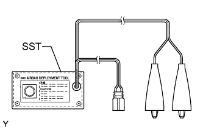 |
Check the function of SST (Click here).
Read the precaution (Click here).
Disconnect the cable from the negative (-) battery terminal.
| Condition | Waiting Time |
| Vehicle enrolled in G-BOOK system | 6 minutes |
| Vehicle not enrolled in G-BOOK system | 1 minute |
Remove the lower steering column cover (Click here).
| 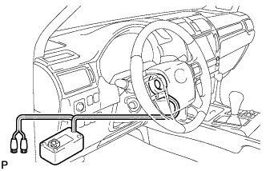 |
Install SST.
Disconnect the airbag connector (yellow colored) from the spiral cable with steering sensor.
Connect SST connector to the airbag connector of the spiral cable with steering sensor.
| 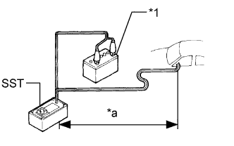 |
Move SST at least 10 m (32.8 ft.) away from the vehicle front side window.
| *1 | Battery |
| *a | 10 m or more |
Maintaining enough clearance for SST wire harness in the front side window, close all doors and windows of the vehicle.
Connect the red clip of SST to the positive (+) battery terminal and the black clip of SST to the negative (-) battery terminal.
Deploy the airbag.
Check that no one is inside the vehicle or within a 10 m (32.8 ft.) radius of the vehicle.
Press SST activation switch to deploy the airbag.
| 3. DISPOSE OF STEERING PAD (WHEN NOT INSTALLED IN VEHICLE) |
Check the function of SST (Click here).
Remove the steering pad (Click here).
| 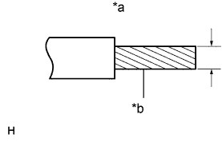 |
Using a service-purpose wire harness for the vehicle, tie down the steering pad to a disc wheel.
| *a | Wire Harness Diameter |
| *b | Stripped Wire Harness Section |
| 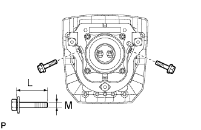 |
Install 2 bolts with washers into the 2 bolt holes on the steering pad.
| 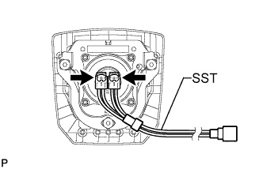 |
After connecting SST to each other, connect them to the steering pad.
| 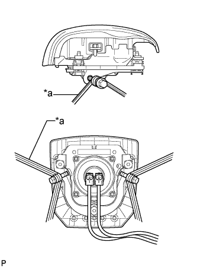 |
Wind 3 wire harnesses at least 2 times each around the bolts installed on the left and right sides of the steering pad.
| *a | 2 times or more |
| 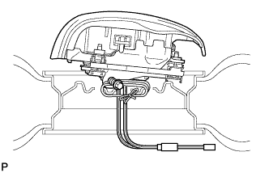 |
Face the airbag deployment side of the steering pad upward. Separately tie the left and right sides of the steering pad to a disc wheel through the hub nut holes. Position SST connector so that it hangs downward through the hub hole of the disc wheel.
| 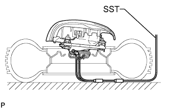 |
Install SST.
Connect SST connector.
| 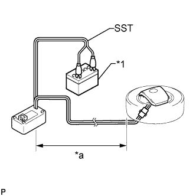 |
Move SST at least 10 m (32.8 ft.) away from the steering pad tied down to the disc wheel.
| *1 | Battery |
| *a | 10 m or more |
| 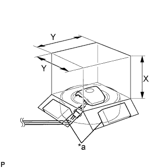 |
Cover the steering pad with a cardboard box or tires.
| *a | Weight |
Covering method using a cardboard box: Cover the steering pad with the cardboard box and place weights on the cardboard box in 4 places with a total of at least 190 N (19 kgf, 41.8 lbf).
 |
Covering method using tires: Place at least 3 tires without disc wheels on the tire with disc wheel which the steering pad is tied to. Place another tire with disc wheel on them.
| *1 | Tires (3 or more) |
| *a | Inner Diameter |
| *b | Width |
 |
Tie the tires together with 2 wire harnesses.
| 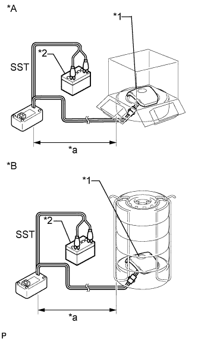 |
Deploy the airbag.
| *A | Using Cardboard Box |
| *B | Using Tires |
| *1 | Steering Pad |
| *2 | Battery |
| *a | 10 m or more |
Connect the red clip of SST to the positive (+) battery terminal and the black clip of SST to the battery negative (-) battery terminal.
Check that no one is within a 10 m (32.8 ft.) radius of the disc wheel which the steering pad is tied to.
Press SST activation switch to deploy the airbag.
| 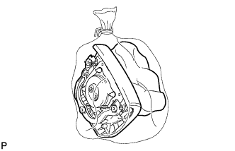 |
Dispose of the steering pad.
Remove the steering pad from the disc wheel.
Place the steering pad in a plastic bag, tie it tightly and dispose of it in the same way as other general parts.